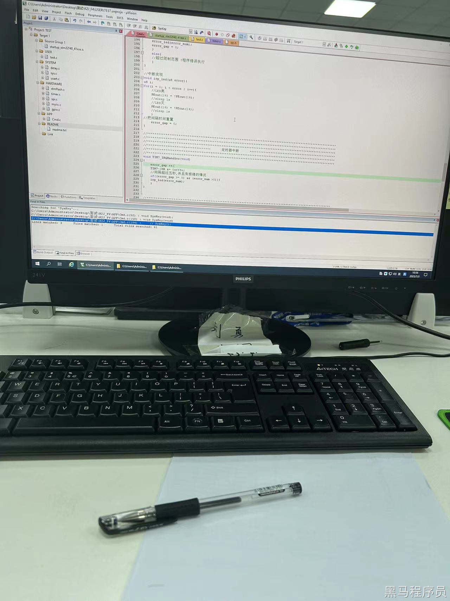

<!DOCTYPE lake>
<p data-lake-id="ud04a65db" id="ud04a65db"><span data-lake-id="u80882c4c" id="u80882c4c">薪资： 18-30K </span></p><p data-lake-id="u33ae7ff3" id="u33ae7ff3"><span data-lake-id="u8d78618b" id="u8d78618b">​</span><br/></p><p data-lake-id="u35266f5f" id="u35266f5f"><br/></p><p data-lake-id="ucb32a9d1" id="ucb32a9d1"><span data-lake-id="u7d61595d" id="u7d61595d">面试题：</span></p><p data-lake-id="u4044a9f6" id="u4044a9f6"></p><p data-lake-id="u7e63d8b7" id="u7e63d8b7"><span data-lake-id="uf042f898" id="uf042f898">​</span><br/></p><p data-lake-id="u484033b3" id="u484033b3"><span data-lake-id="ua86a3ac9" id="ua86a3ac9">现场keil编程，编写一个stm32的点灯程序, gd32和stm32 pin2pin和寄存器兼容，</span></p><p data-lake-id="u49363937" id="u49363937"><span data-lake-id="ueabd2f17" id="ueabd2f17">gd32F470和stm32f429的代码都可以完全一模一样，烧录方式也一样。</span></p><p data-lake-id="u1ded69ef" id="u1ded69ef"><br/></p><p data-lake-id="u55b82200" id="u55b82200"><span data-lake-id="u1b1f0a89" id="u1b1f0a89">可使用stm32的API去编写，示例代码如下：</span></p><span class="yuque-card-unsupported">[codeblock]</span><p data-lake-id="u2f333127" id="u2f333127"><span data-lake-id="uba1baba9" id="uba1baba9">​</span><br/></p><p data-lake-id="u05c97157" id="u05c97157"><span data-lake-id="u4dfd3c33" id="u4dfd3c33">也可以直接用gd32的库函数和API编写。</span></p><span class="yuque-card-unsupported">[codeblock]</span>